In our ongoing efforts to refine our model training processes, we have updated our datasets to enhance data quality and consistency. Below, we illustrate the structural and content-related improvements between the original and the revised datasets.
The initial dataset, depicted in the first image, included various metrics such as language detection, refusal flags, and comprehensive token counts, along with qualitative assessments like information fulfillment and technical accuracy. The second image showcases our cleaned dataset, which now features:
A Random Forest binary classifier is trained, resulting in multiple classifiers. After training, the classifiers are used to collect the probability scores of each instance in the test set for each class and the class with the highest probability is then selected for each test instance where it calculates and displays metrics—accuracy, precision, recall, and F1-score—for each of the binary classifiers on the test set.
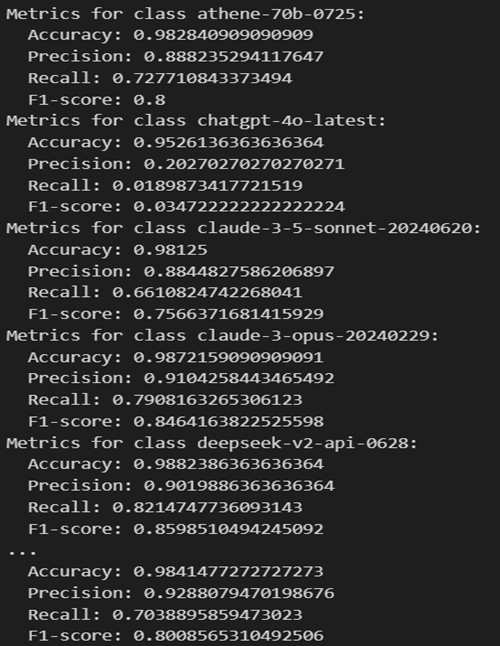
Printed the overall accuracy of the Random Forest classifier across all classes. Models like gpt-4-0125-preview and llama-3-70b-instruct show high precision, recall, and F1-scores, while models like chatgpt-4o-latest underperformed. Most of the models have moderate performance, with scores ranging from 0.60 to 0.80.
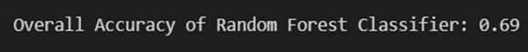
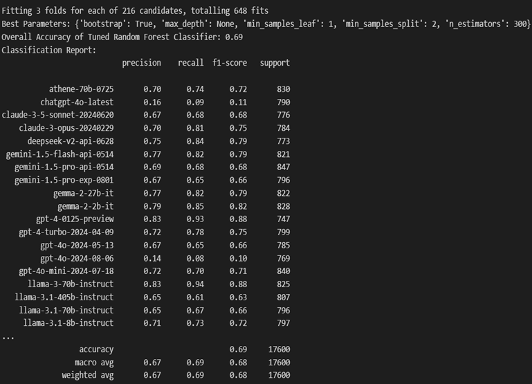
The matrix provides a view of how well each model is performing relative to others in predicting different classes. The area under each curve (AUC) is an indicator of how well the model can distinguish between classes, with values closer to 1 indicating better performance.
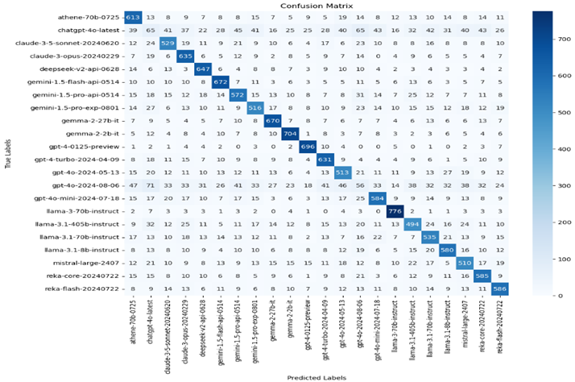
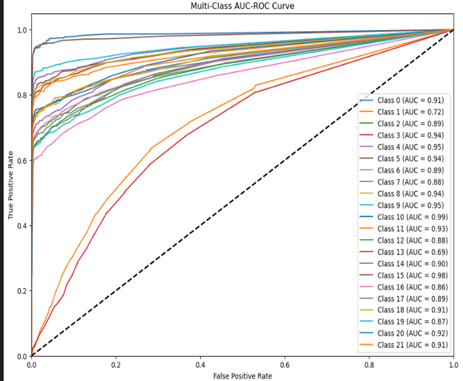
The XGBoost classifier achieved an overall accuracy of 0.68. We have used XGBoost for a multi-class classification using a One-vs-Rest approach. The process involves the following steps: Data Loading and Preprocessing, Hyperparameter Tuning using RandomizedSearchCV to tune hyperparameters and selecting the best parameters. Then it trains separate One-vs-Rest XGBoost classifiers for each class. Making predictions involves calculating overall accuracy, a classification report for precision, recall, and F1-score, and visualizing the confusion matrix. Additionally, AUC-ROC curves are plotted.
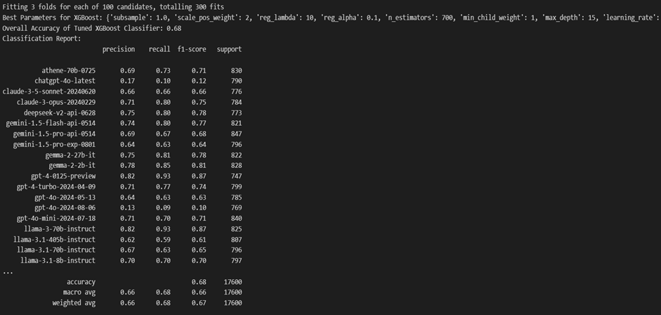
The diagonal values, which show the highest numbers (e.g., 603 for the first class), indicate correct predictions.
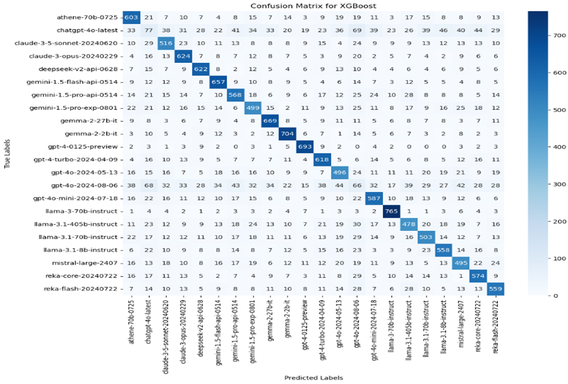
The curves closer to the top-left corner of the plot indicate better performance, with AUC values closer to 1.0.
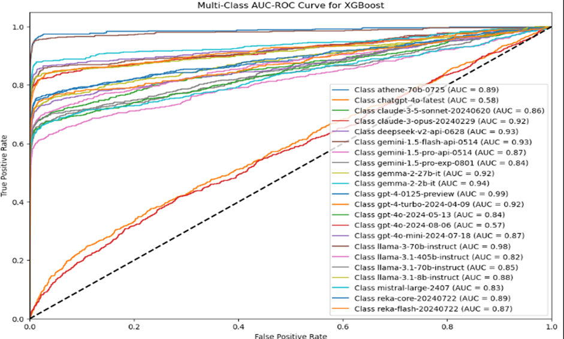
The CatBoost classifier achieved an overall accuracy of 0.66. We have used CatBoost for a multi-class classification using a One-vs-Rest approach. The process includes the following steps: Data Loading and Preprocessing, Hyperparameter Tuning using RandomizedSearchCV to tune hyperparameters and selecting the best parameters. Then it trains separate CatBoost classifiers for each class. Making predictions involves calculating overall accuracy, a classification report for precision, recall, and F1-score, and visualizing the confusion matrix. Additionally, AUC-ROC curves are plotted.
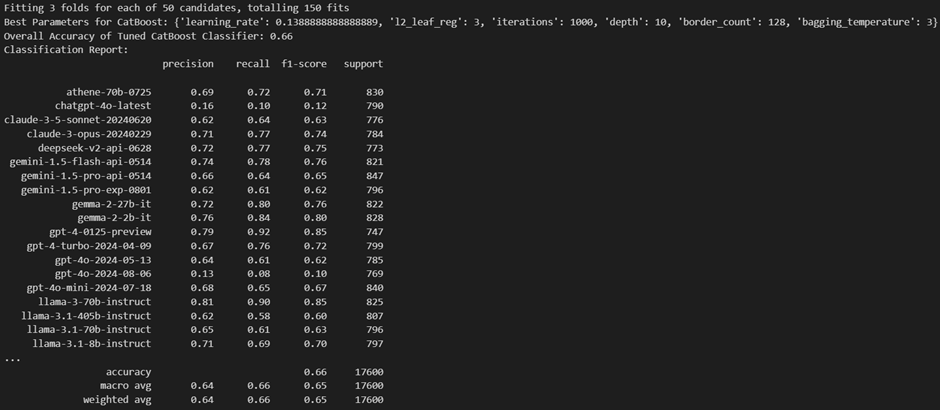
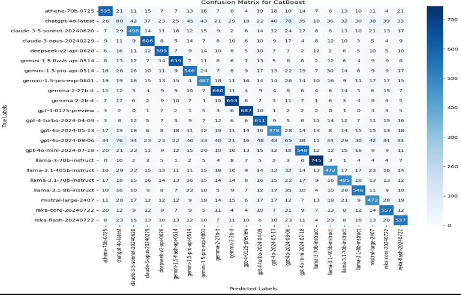
The Area Under the Curve (AUC) where values close to 1 indicate high ability and values closer to 0.5 suggest no better than random performance.
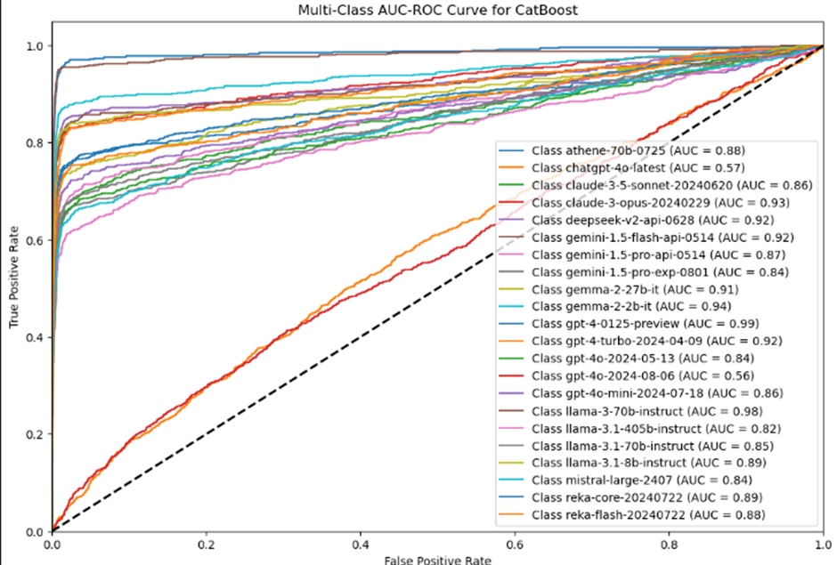
The LightGBM classifier achieved an overall accuracy of 0.68. The process uses LightGBM for a multi-class classification through a One-vs-Rest approach and involves the following steps: Data Loading and Preprocessing, Hyperparameter Tuning using RandomizedSearchCV with 150 iterations and 5-fold cross-validation to tune hyperparameters and selecting the best parameters. Then, using the One-vs-Rest method, separate LightGBM classifiers are trained. Evaluating the results includes analyzing confusion matrices, classification reports, and AUC-ROC curves.
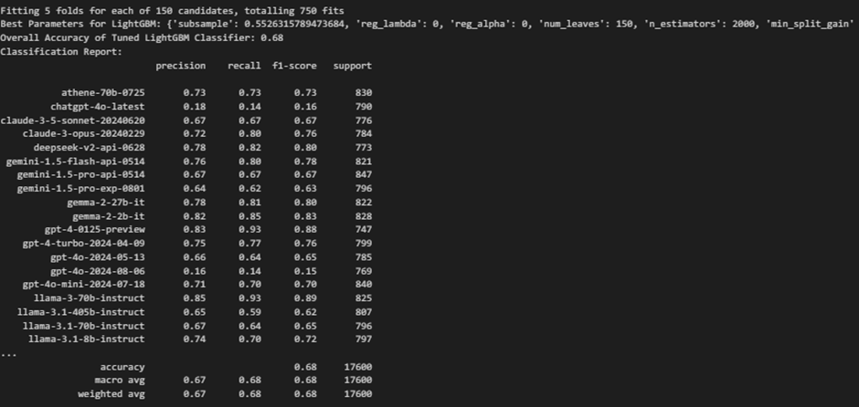
High diagonal values suggest that the classifier performs well in predicting those classes, whereas high off-diagonal values indicate areas where the classifier confuses one class for another.
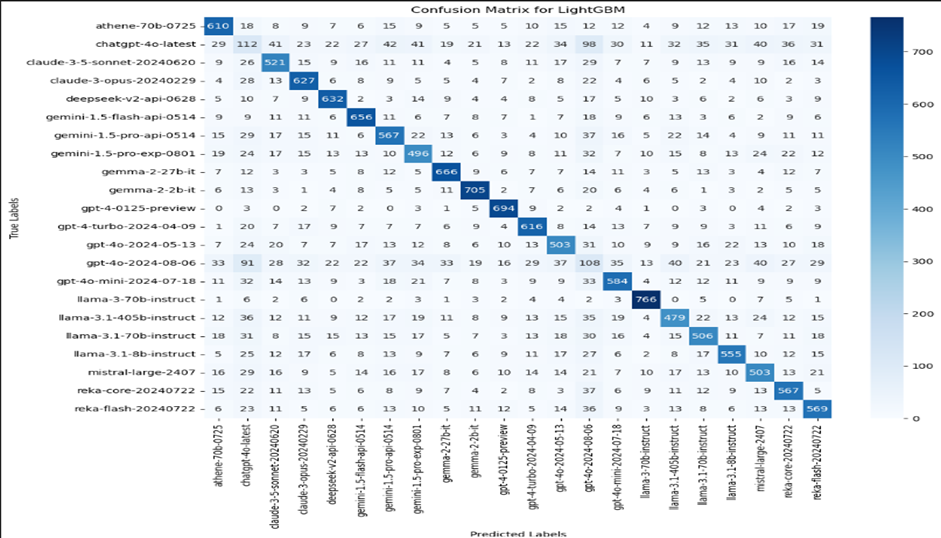
Values close to 1 indicate excellent ability, while values near 0.5 suggest no better accuracy than random guessing.
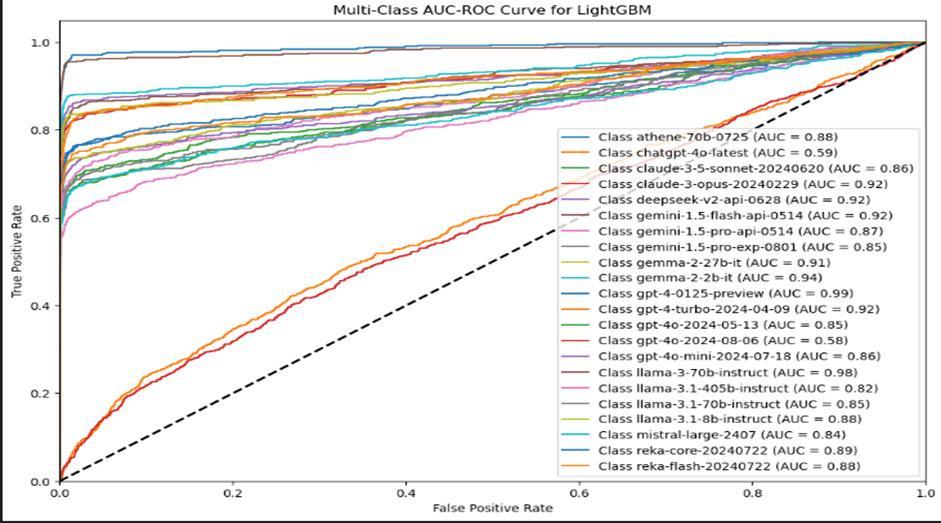
The Voting classifier achieved an overall accuracy of 0.69. We handled a multi-class classification by utilizing a Voting Classifier, combining LightGBM, CatBoost, and XGBoost through a One-vs-Rest (OvR) strategy. The process includes the following steps: Data Loading and Preprocessing, Model Initialization where it initializes three models—LightGBM, CatBoost, and XGBoost—with hyperparameters, which constructs a Voting Classifier using soft voting from all three models. Then, train the One-vs-Rest Model with multiple Voting Classifiers in a One-vs-Rest approach. Evaluating the results includes analyzing confusion matrices and classification reports.
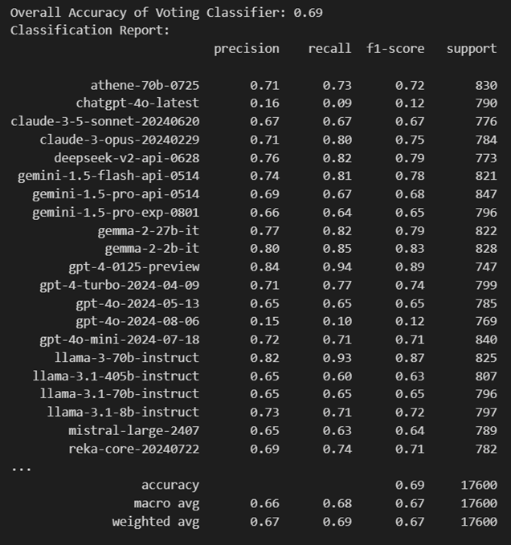
The numbers on the matrix diagonal (e.g., 608 for the first class) indicate correct predictions for each class, while off-diagonal numbers represent misclassifications.
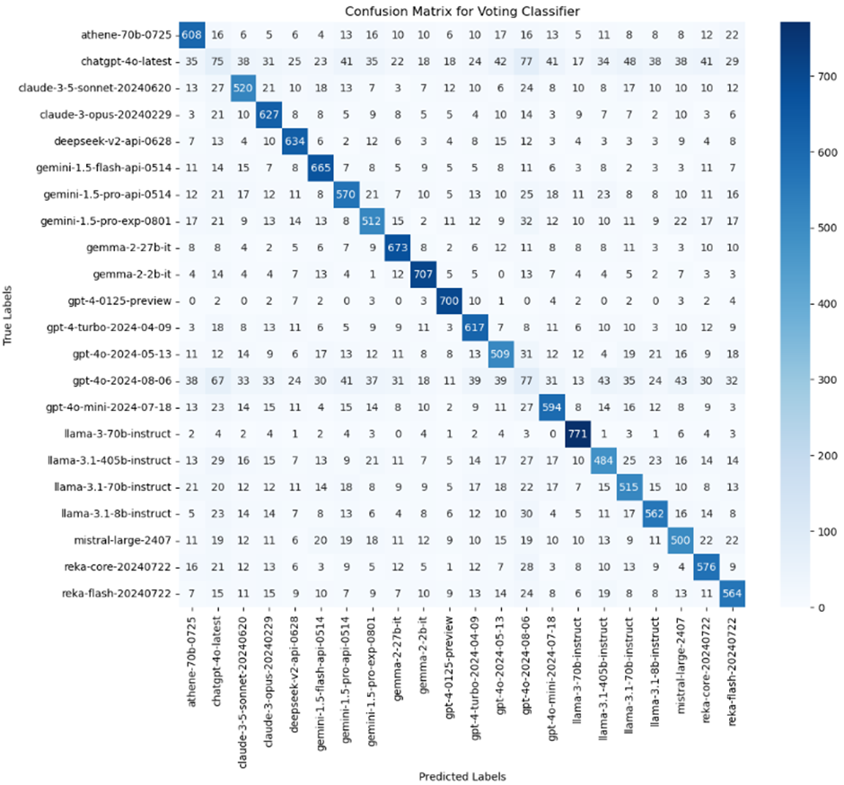
| MODEL NAME | ACCURACY |
|---|---|
| RANDOM FOREST | 0.69 |
| XG BOOST | 0.68 |
| CATBOOST | 0.66 |
| LIGHTGBM | 0.68 |
| VOTING | 0.69 |